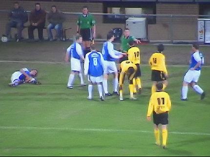
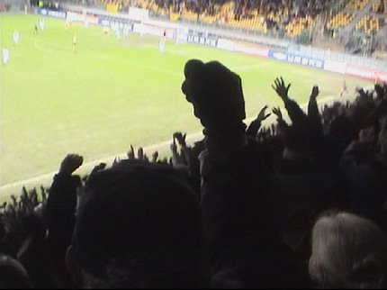
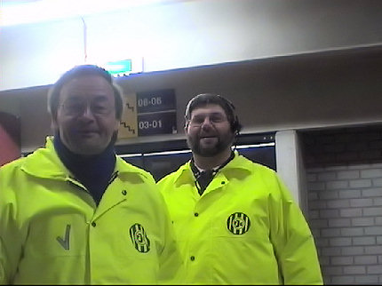

|
Roda JC - RKC (1-0) 8 februari 2006
|
De aanvoerdersband verhuist van Gregoor van Dijk naar Ivan Vicelich omdat
de Nederlander is geschorst.
Net als in Helmond hebben ook deze Brabo's wat te zeiken over Limburg.
Het grote doek gaat weer over west.
Scheidsrechter Van Sichem....

In een koud en sfeerloos PLS ontspint zich een matige wedstrijd. Een van
de betere spelers is Lachambre die veelvuldig op links doorbreekt zoals hier
waar zijn eindpass net niet door Sergio benut wordt.
Niettemin gaat een koel Bafje er altijd in bij de doorgewinterde supporter.
Cissé gaat net iets te gemakkelijk onderuit binnen de zestien.

Na ruim een halfuur spelen breekt een zeer opwindend en discutabel
moment aan in de tot dusver tamme wedstrijd: Cissé heeft al dan niet
vermeend een forse blessure toegebracht aan Teixera die zich verbijt van
de pijn.
Er ontstaat en enorm tumult tussen spelers van beide partijen met in het
midden Van Sichem die na twee minuten van overleg met zijn assistent
rood trekt voor Cissé. Atteveld moet er aan te pas
komen om oververhitte
spelers te bedaren. Achtereenvolgens worden Saijs,
Sergio en Vicelich uit
de spelerskluwen getrokken. Vicelich komt daarbij zelfs ten
val.
Latere TV-beelden lijken uit te wijzen dat de Ivoriaan bewust een gemene
overtreding maakt maar daar is de timide Rodaspits niet toe in staat. Zijn
trap op het onderbeen van Teixera was weliswaar hard maar niet bedoeld,
aldus de stellige overtuiging van het publiek. De RKC-verdediger hield in en
probeerde de bal af te schermen waarna de op snelheid zijnde Cissé
erbovenop knalde. De rode kaart is een erg zware straf. De trainer van
beide ploegen bevestigden dit.
Enkele minuten later grijpt Van de Haar naar de keel van Voigt die al na
een kwartier de geblesseerd uitgevallen Kah verving.
Ook nu weer trekt Van Sichem erg gemakkelijk de rode kaart.
Cristiano die erin is gekomen voor Voigt stuit op doelman Van Dijk.
Bodor verzendt de bal naar Cristiano.
Deze kan van dichtbij inkoppen: 1-0, (59').

Eindelijk valt er weer eens wat te juichen.
In de 90e minuut mag Sonko ook nog even meedoen. Sergio gaat er af.
In de extra tijd passeert Van Dijk doelman Kujovic en kan Janssen de bal
net niet binnentikken. Roda ontsnapt aan een bijna zekere gelijkmaker.
Saeijs en Cziommer gaan uit hun dak.
Ze hadder er niet zoveel zin in, maar na enig aandringen van het publiek
kon er toch nog een bedankje af.
Terwijl op de voorgrond een blunt wordt gefabriceerd viert Roedie op de
achtergrond nog steeds de drie-punter.
Twee broers met een potentiële
Roda-girl.
Een nieuw mascotje! Tamara, je mag vaker mee!!!
Terwijl de Kickoff al vrijwel leeggestroomd is arriveren Lachambre, Begois,
Sergio en Saeijs.
Jean-Paul Saeijs.

Blije gezichten bij de stewards omdat ze deze keer wat eerder naar huis
kunnen ;-)
Door deze overwinning blijft Roda op de elfde plaats staan maar nadert het
naaste concurrent RKC tot op 2 punten en is het bereiken van de plee-offs
nog een reële mogelijkheid.
© Koempels Pleasure Dome
|

{kind=link}